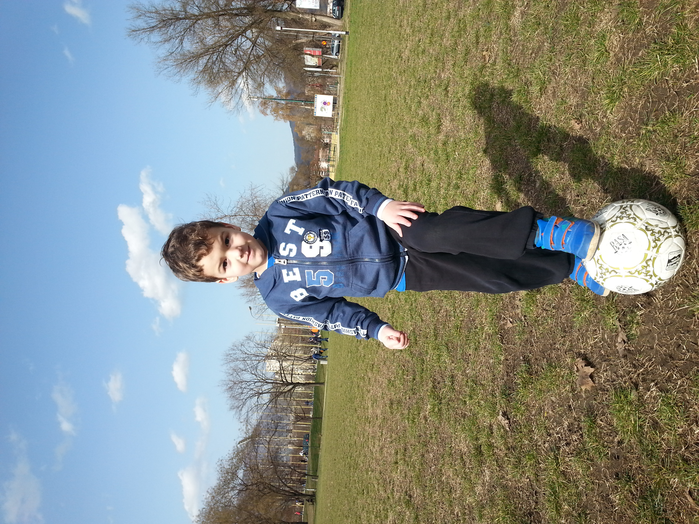

Ermin Mujčinović

Personal Review
A curious person who is always looking for new experiences. It's probably because of that trait that I haven't become very good at anything. I'm a great father though.
Education
- Primary Education: Miroslav Krleža Zenica
- Secondary Education: Gymnasium 29 November Zenica
- Faculty: Faculty of Economics, Sarajevo
Work Experience
- Dom Štampe Zenica - 1996-1998 Graphic Designer
- Tesa Štamparija Zenica - 1998-2002 Graphic Designer
- Velepromet Zenica - 2002-2015 Consumer goods Sales Manager
- MKF Mikra Sarajevo - 2016-2022 Loan Officer in a Bank
- JP BH Posta Sarajevo - 2023- Developer and Database Administrator
Skills: (Grades from 1 to 10)
- English language:
- Reading 6
- Writing 6
- Understanding 9
- Computer skills: 8
- Sports skills and activity: 8
Awards and Certifications
- Certificate in advanced knowledge of SQL
- Certificate Creation of complex Store Procedures in SQL
Other